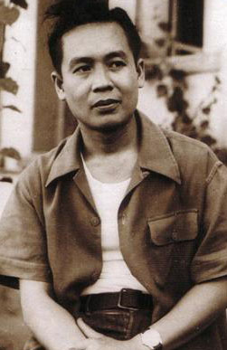

(Xếp theo thứ tự năm sinh từ nhỏ đến lớn: Trịnh Công Sơn, Tuý Hồng, Nguyễn Thị Thuỵ Vũ, Dương Nghiễm Mậu, Nguyễn Đình Toàn, Nhật Tiến, Thế Uyên, Thế Phong, Bùi Giáng, Võ Hồng)
Dans tous les domaines, le triomphe de la vie est la création.
Trong mọi địa hạt, sự đắc thắng của đời sống là sáng tạo.
Henry Bergson (1859-1941)
Sinh hoạt văn học nghệ thuật miền Nam trong vòng mười năm (1961-1970) đã phát triển thật phong phú với sự góp mặt đông đảo những người làm văn nghệ thuộc nhiều lớp tuổi. Họ du nhập vào đời sống nghệ thuật như dòng nước lũ, chảy phăng phăng với những chiều hướng khác biệt nhưng vô cùng sung mãn.
Những người làm nghệ thuật hôm nay, họ không quan niệm văn nghệ có nhiệm vụ nhằm cải tạo nếp sống, hoặc đem cái tinh hoa của nghệ thuật để phục vụ cho mục đích nào đó của xã hội, nhưng chính để tỏ bày trước tập thể, những giá trị mới của suy nghĩ. Bởi vậy, cái ý nghĩa tinh khôi của danh từ, đã biến chất, trở thành một xác định hiển nhiên qua nhiều phương cách sáng tạo. Cái tạp đa (persité) trong văn nghệ hiện đại, không phải chỉ do sự biến chuyển của những yếu tố cấu tạo nên ngôn ngữ, nó còn là biểu tượng của sự điều hoà thế hệ, ở một thời đại có nhiều biến chuyển đột ngột do thời cuộc đẩy tới.
Đi vào văn nghệ là đi vào khung trời đầy rẫy buồn phiền với nhiều ray rứt nội tâm. Cái vòm con sáng tạo treo cao giữa vùng trời suy tưởng, muôn đời vẫn chỉ là ảo ảnh do mộng mơ sáng tạo. Người làm văn nghệ nhìn lên cái vòm cong vinh quang để phác hoạ, mong tìm về cho mình một thuần khiết nào đó, nhưng hỡi ơi! Mỗi lần viết ra, nó lại biến thể qua ngôn ngữ đê trở thành một vùng ám ảnh, mang nhiều chứng tích u uẩn với đêm khuya phủ kín mặt người. Nỗi ám ảnh trong lòng người làm văn nghệ hôm nay, ít nhiều gì cũng trùng hợp với bóng dáng của F. Scott Fitzgerald 1 với chiều sâu bi đát, với nhiều đêm mất ngủ, với khủng hoảng tâm trí, trong mỗi suy nghĩ về tình yêu, cuộc sống và hư vô!
Sự sáng suốt vô tư ở mỗi ý nghĩ hầu như đã biến dạng, chỉ còn lại chua chát của ngôn từ trong mỗi dòng, mỗi ý được phô diễn qua tác phẩm để chứng minh sự thật. – Tại sao như vậy? Những người làm văn nghệ hôm nay, phải chăng bị thôi thúc quá nhiều bởi dục vọng kỳ bí? Họ muốn tiêu huỷ cho hết, dốc đi cho khô cạn những dòng cảm xúc đang ứ nghẹn ở nội tâm?
Trước mặt họ, hiện ra một vũ trụ tối đen như niềm tuyệt vọng, không có cả sự tới gần cõi Siêu hình để đối chiếu tương quan giữa con người và khách hàng trước Hư vô. Họ như đứng chênh vênh trên bờ vực thẳm, cong mình ngó xuống: tự đáy sâu bỗng mọc lên sự ô nhục, đớn hèn và phản trắc. Họ vội ẩn mình vào bản ngã. Họ có cảm tưởng như kẻ đứng chờ đợi vĩnh viễn ở biên giới của đời sống, không có hy vọng kinh qua được ngưỡng cửa cách ngăn giữa họ và thực tại.
Họ băn khoăn, mệt mỏi trong cuộc hành trình đi tìm thân phân trước ba vấn đề: chiến tranh, tình yêu và đời sống.
Cuộc chiến với hai mươi lăm năm hoang phí mà tuổi trẻ chưa một lần an hưởng trọn vẹn, được hình dung bằng vùng trời đầy huyết lệ, ở đó, mỗi số phận như bị buộc chặt vào tập thể, vào định mệnh. Nó có đấy như một kiêu hãnh đồng thời cũng như một nhục nhằn. Chiến đấu cho tự do, dân chủ, danh từ có phải bàn tay Tuý Hồng đang đong đưa chiếc “nôi phù thuỷ” vẫy gọi lũ kên kên mở hội ái tình với tiếng thở dài não nuột! Còn ai kia, đang cất lên tiếng nói độc địa, với dáng điệu hung hãn, phá phách điên cuồng, có phải vóc dáng Thế Phong với những mũi nhọn nén vun vút vào cuộc đời để thoả mãn tự ái? Cái nguồn thương yêu sáng láng và cao cả của tình người giữa những cơn sóng đảo điên ích kỷ, cũng thổn thức đâu đây, qua tâm tư Nhật Tiến với khung trời mơ ước thăng hoa. Cách mạng, chiến tranh, phẫn nộ và tình dục đang quay tít mù giữa cuộc đời đổ vỡ, hình ảnh Thế Uyên im sững nhìn lũ âm binh mải mê thi hành nhiệm vụ. Nay quê hương, ôi! Quê hương yêu dấu! Đã bao lâu rồi, tiếng nói kinh hoàng còn cất lên giữa thinh không bát ngát, gọi về từng chắt chiu kỷ niệm, gọi về dĩ vãng khoả lấp trong bom đạn mịt mù, với bao nhiêu dang dở! Có phải Võ Hồng đó chăng? Tiếng nói trang nghiêm vẫn lẩn khuất nỗi u hoài của thương, của nhớ, của điêu tàn, sụp đổ mơ ước trần gian cùng đắng cay mãi mãi!…
Tiếng nói của văn nghệ hôm nay có lúc nó thì thầm thân mật, có lúc nó bùng cháy giận dữ, có lúc nó cay đắng, mỉa mai, có lúc nó dâm loạn, có lúc nó buông thoát, chia lìa!… Trong vùng ánh sáng nghệ thuật chiếu rọi vào đời sống, từng hình ảnh thấp thoáng chạy quanh, đuổi bắt nhau, chửng rỡn nhau như những con múa rối. Chiến tranh, tình yêu và đời sống đã gắn bó từng sự kiện để từ đấy, tạo nên bi kịch!…
Nghệ thuật hôm nay cách biệt hẳn với nghệ thuật tiền chiến. Nó khoẻ và sống hơn nhiều, vì nhờ vào những yếu tố thực tế, với bao nghịch cảnh tác động thẳng vào tri giác, gây phản ứng cho mỗi suy nghĩ. Chính vì suy nghĩ miên man, nên sự tỏ bày tình tiết trong tác phẩm có phần nào rắc rối, và đôi khi khép kín nữa, nhằm kích động tò mò đồng thời cũng để gây hứng thú cảm mỹ. Họ quyết tâm đi theo con đường đã chọn lựa. Họ muốn những suy nghĩ ấy được trực tiếp truyền cảm, không cần đi qua cánh cửa lý trí.
Nhưng nghệ thuật vốn cô đơn và buồn rầu, mặc dù chỉ có nó mới đủ khả năng để nhận định đời sống một cách chân thực nhất. Cái dòng sống nội tâm của mỗi cá nhân nghệ sĩ, không ở mặt đất, nó sinh động trong môi trường đặc biệt và bị thúc đẩy vào sâu ý thức, để khám phá ra từng sự thực che giấu sau mỗi đột biến. Nó đi tìm cái căn bản của mỗi trạng huống để trình bày thái độ. Nó hướng vào tương lai với cái nhìn lý tưởng. Nó cũng biết tàn nhẫn bỏ rơi không thương tiếc những cái bất toàn của xã hội (mù quáng, vô ý thức) và tin tưởng vào lẽ tất thắng cuối cùng của sức mạnh hướng thiện. Nó là toàn vẹn. Nó không cần tán tụng, chỉ cần cảm thông. Vì nghệ thuật biểu thị cho niềm tin vĩnh cửu – thực sự cần thiết cho việc tạo dựng một đời sống chân thực. Đôi khi nó cũng là tiếng kèn cấp báo trong đêm tối mịt mùng, hay mang nỗi thất vọng như lời cầu cứu truyền đi trên mặt nước!…
Nghệ thuật có sức mạnh tự tại. Nó lấy đà vượt lên, tạo thành chuyển động. Chỉ nghệ thuật mới có thể nói lên cái biểu tượng duy nhất đó. Nếu những người làm văn nghệ để mất đi, thì không còn gì mà tồn tại. Bổn phận của họ phải giữ gìn cái sức mạnh đó trong suy nghĩ và ngôn ngữ.
Không biết những người làm văn học nghệ thuật hôm nay, có chia sẻ phần nào với quan điểm của W. Faulkner về văn nghệ, trong bài diễn văn của ông đọc khi lãnh giải Nobel, 1950:
… Tôi tin rằng con người không phải chỉ tồn tại một cách đơn giản mà thôi, nó còn phải chiến thắng. Nó bất tử, không phải vì nó là kẻ duy nhất trong tạo vật có một tiếng nói bất tuyệt, nhưng bởi nó có một linh hồn, một tinh thần có khả năng biết xót thương, biết hy sinh và biết kiên trì. Bổn phận các nhà thơ, nhà văn là phải nói lên những điều đó…
(“Tôi từ chối thừa nhận sự tận cùng của con người”)
… Je crois que l’homme ne doit pas simplement durer, il doit triompher. Il est immortel, non parce qu’il est le seul parmi les créatures à posséder une voix intarissable, mais parce qu’il a une âme, un esprit capable de compassion, de sacrifice ed de persévérance. Le devoir du poète et de l’écrivain est de parler de ces choses…
(“Je me refuse à admettre la fin de l’homme”)
W. Faulkner, traduction de L. Jacoël
Cuốn sách này được thực hiện cùng một chiều hướng với cuốn Mười khuôn mặt văn nghệ, ấn hành năm 1970, nghĩa là kẻ viết chỉ tỏ bày cảm nghĩ của riêng mình đối với mười nhà văn nghệ hiện diện trong những trang sau. Do đó, không tránh được chủ quan trong vấn đề chọn lựa cũng như nhận định giá trị từng người qua tác phẩm và tài năng. Vì ý thức được sự thiếu sót ấy, nên kẻ viết xin gửi nơi đây lời tạ lỗi chân thành đến các văn hữu, nếu kẻ viết không, hoặc chưa khám phá ra những cái Hay, cái Đẹp, cũng như sự trích dẫn chưa đúng mức để mà sáng tỏ toàn bộ sự nghiệp của mỗi vị.
Sự thực, khu vườn văn nghệ còn nhiều bông hoa đáng quý, đáng kính khác, hơn một lần, kẻ viết lại cầu mong có hoàn cảnh cùng thời gian để tiếp tục được hân hạnh, lần lượt viết về những tinh hoa của nghệ thuật Việt Nam – những người đã phải trả giá đời mình cho văn nghệ.
Cuốn sách đang ở trong tay bạn, chắc chắn còn nhiều sơ suất lỗi lầm. Nhưng dù sao nó cũng được hoàn thành do thiện chí và cố gắng miên tục, với ngày dài cặm cụi, với đêm khuya đèn chong một ngọn, giam mình giữa đống sách ngổn ngang. Từng dòng chữ nhảy múa giữa hồn người mê chữ, ngay cả trong giấc ngủ, mới chợp mắt, ngoài trời đã dựng sáng.
Những cánh hoa đã thả cho bay theo chiều gió, chả biết có cánh nào rơi vào vùng trời hằng mơ ước?…

Tạ Tỵ (1921 - 2004).
Chú thích:
1 F. Scott Fitzgerald (1897-1941), nhà văn lớn của Mỹ, đã bị khủng hoảng thần kinh trong khoảng thời gian 1935-1936, khi đang viết The Crack up (Điên đầu). Sau khi ông mất, di cảo này do nhà New Directions, New York ấn hành. Nội dung gồm những đoản văn có tính cách tự thuật với suy nghĩ qua tình yêu đổ vỡ, cuộc sống bi đát và ám ảnh của những đêm dài ghê rợn, xen kẻ những câu ngạn ngữ. Các tác phẩm: This Side of Paradise, The Great Gatsby, Tender Is the Night, The Last Tycoon, đều được phiên dịch qua Pháp ngữ.